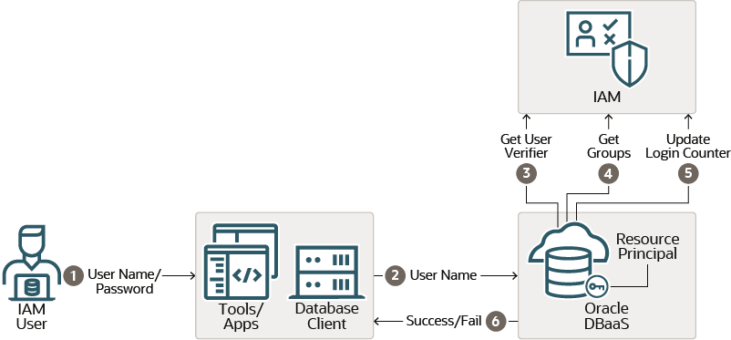
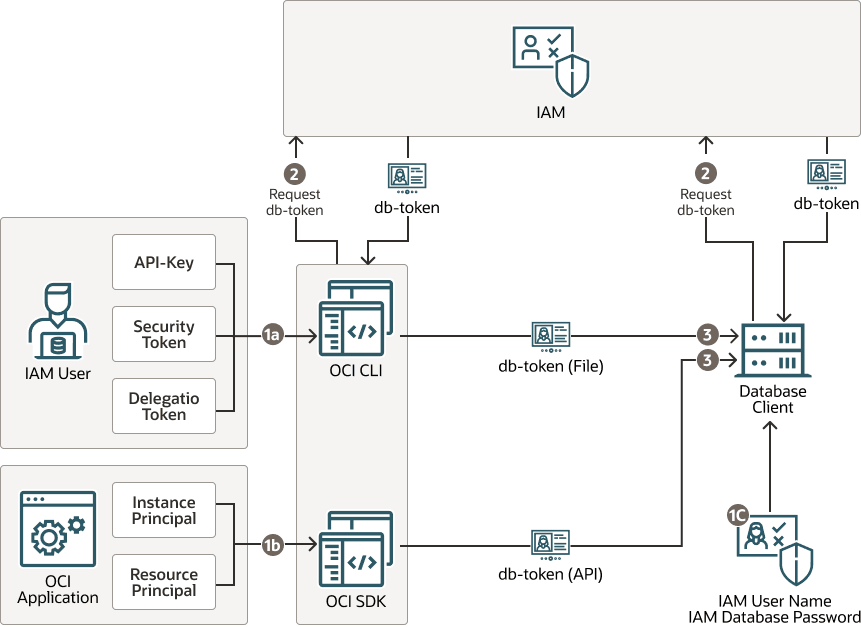
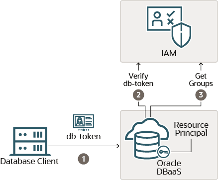
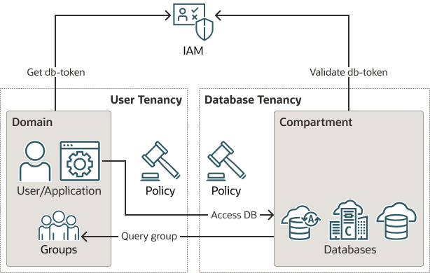

7 Authenticating and Authorizing IAM Users for Oracle DBaaS Databases
Identity and Access Management (IAM) users can be configured to connect to an Oracle Database as a service (Oracle DBaaS) instance.
- Introduction to Authenticating and Authorizing IAM Users for Oracle DBaaS
Before you begin authenticating and authorizing IAM users for an Oracle DBaaS instance, you should understand the overall process. - Configuring Oracle DBaaS for IAM
To configure Oracle DBaaS to work with IAM, an Oracle DBaaS database administrator must first enable the IAM integration and then authorize IAM users and roles for Oracle DBaaS. - Configuring IAM for Oracle DBaaS
To configure IAM to work with the Oracle DBaaS instance, an IAM administrator may need to create an IAM policy and have users create an IAM database password. - Accessing the Database Using an Instance Principal or a Resource Principal
An Oracle Cloud Infrastructure (OCI) application or function can connect to the database instance using its own instance or resource principal. - Configuring the Database Client Connection
Configuring the IAM client connection controls the authentication of IAM users to the Oracle DBaaS instance. - Accessing a Database Cross-Tenancy Using an IAM Integration
Users and groups in one tenancy can access DBaaS database instances in another tenancy if policies in both tenancies allow this. - Database Links in an Oracle DBaaS-to-IAM Integration
The use of database links when accessing the Oracle DBaaS database using IAM credentials is supported. - Troubleshooting IAM Connections
TheORA-01017: invalid username/password; logon deniederror can be caused by several different issues throughout the Oracle DBaaS integration with Identity and Access Management (IAM).
Parent topic: Managing User Authentication and Authorization
7.1 Introduction to Authenticating and Authorizing IAM Users for Oracle DBaaS
Before you begin authenticating and authorizing IAM users for an Oracle DBaaS instance, you should understand the overall process.
- About Authenticating and Authorizing IAM Users for Oracle DBaaS
Users for the Oracle DBaaS instance can be centrally managed in Oracle Cloud Infrastructure (OCI) Identity and Access Management (IAM). - Architecture of the IAM Integration with Oracle DBaaS
The architecture for the IAM integration with an Oracle DBaaS instance depends on whether the IAM user is using an Oracle Cloud Infrastructure (OCI) IAM database password verifier or an OCI IAM token to authenticate or connect to the DBaaS instance. - IAM Users and Groups to Map with Oracle DBaaS
IAM users must be mapped to a schema, either an exclusive mapping of a database schema to an IAM user or to a database shared schema that is mapped to an IAM group the user is a member of.
7.1.1 About Authenticating and Authorizing IAM Users for Oracle DBaaS
Users for the Oracle DBaaS instance can be centrally managed in Oracle Cloud Infrastructure (OCI) Identity and Access Management (IAM).
You can perform this integration in the following Oracle Database environments:
- Oracle Autonomous Database Serverless
- Oracle Autonomous Database on Dedicated Exadata Infrastructure
- Oracle Autonomous Database on Exadata Cloud@Customer
- Oracle Exadata Database Service on Dedicated Infrastructure
- Oracle Exadata Database Service on Cloud@Customer
- Oracle Base Database Service
The instructions for configuring IAM use the term "Oracle DBaaS" to encompass these environments.
Note:
Oracle Database supports the Oracle DBaaS integration for OCI IAM with identity domains as well as the legacy IAM, which does not include identity domains. Both default and non-default domain users and groups are supported when using IAM with identity domains.
Oracle Database only supports Oracle DBaaS integration for OCI IAM with local IAM users when they use legacy IAM tenancies. Federated users are supported when using IAM with identity domains.
The DBaaS integration with OCI IAM does not support users
with administrative privileges (SYSDBA,
SYSOPER, SYSBACKUP,
SYSDG, SYSKM, and
SYSRAC). However, these privileges are
supported when using IAM database passwords, but only when the
database is open.
An Oracle Database administrator works with an OCI IAM administrator to manage the authentication and authorization of OCI IAM users who need to connect to the Oracle DBaaS instance. The types of Oracle DBaaS instance that IAM users can connect to are Oracle Autonomous Database Serverless, Oracle Autonomous Database on Dedicated Exadata Infrastructure, and Oracle Base Database Service.
This type of connection enables the IAM user to access the Oracle DBaaS. These users typically log in with a user name and password (for example, using SQL*Plus). Alternatively, a user can log in with IAM Single-Sign On (SSO) credentials with a token when accessing the DBaaS instance. The choice to use IAM password authentication or the IAM SSO token authentication depends on the use case and user preference.
Legacy applications using existing supported database clients can migrate seamlessly to using an IAM user name and password. They can also use the IAM database gradual password rollover feature to set a second database password in IAM and update the application passwords without downtime.
Tools and applications that are updated to support IAM tokens can authenticate users directly with IAM and pass the database access token to the DBaaS instance. Existing database tools such as SQL*Plus can use the IAM database password to authenticate with the database directly using existing password login protocol or the database client can request a database token (db-token) from OCI IAM using the IAM user name and IAM database password and send the db-token to the database for IAM user access. The database client can only request a db-token in exchange for the IAM user name and IAM database password. All other IAM credentials (API-key, instance principal, resource principal, security token, delegation token) will require the db-token to be requested by the application or helper client like OCI CLI. A database access token (db-token) is a scoped proof-of-possession (POP) token and comes with a public key. Before the db-token is sent to the database, the database client signs the db-token with the private key that is associated with token's public key. It provides "proof" that the sender of the token is the rightful holder of the token. The scope can optionally be included as part of the request for the db-token to reduce the scope of what the db-token can be used for. The default scope for the db-token is the entire tenancy but compartment and individual databases can also be defined as the scope. See the get description in OCI CLI Command Reference for more information.
IAM users and OCI applications can request a database token from IAM by using one of the following methods:
- Using an existing, valid security (session) token
- Using an IAM recognized API-key
- Using a delegation token within an OCI cloud shell
- Using an OCI instance principal for an application on OCI compute instance
- Using an OCI resource principal for an application with a resource principal
- Using an IAM user name and IAM database password (can only be requested by database client)
The general process of enabling an IAM user to connect to an Oracle DBaaS instance is as follows:
- The IAM administrator creates and manages the IAM user accounts and groups, adding IAM users to appropriate IAM groups based on their tasks.
- On the Oracle DBaaS instance, the database administrator enables the connection between the Oracle DBaaS and the IAM endpoint.
If the database is Autonomous Database on Dedicated Exadata Infrastructure, then the IAM connection for new PDBs is automatically enabled. Check the Oracle DBaaS documentation for details.
- On the Oracle DBaaS server, the database administrator enables the authorization of the IAM users by performing the following types of mappings:
- Mapping an IAM group to a shared Oracle Database global user account
- Mapping an IAM group to an Oracle Database global role
- Exclusively mapping the IAM user to an Oracle Database global user
The IAM user must be mapped to one schema, either exclusively or to a shared schema. They can optionally be members in an IAM group that is mapped to one or more global roles.
- The following use cases are some common scenarios to connect to the Oracle DBaaS
with centralized IAM authentication and authorization:
- Connecting using SQL*Plus to the Oracle DBaaS using an IAM user name and IAM database password.
- Using SQL*Plus to connect using an IAM SSO token.
- Using SQLcl to connect to the Oracle DBaaS using the IAM password or IAM token.
- Using SQL*Plus within the Oracle Cloud Infrastructure (OCI) Cloud Shell to connect to the Oracle DBaaS using the IAM password or IAM SSO token. Authenticating and authorization with IAM will take additional time as opposed to authenticating to a local database user account (non-global).
Related Topics
- Oracle Autonomous Database Serverless
- Oracle Autonomous Database on Dedicated Exadata Infrastructure
- Oracle Autonomous Database on Exadata Cloud@Customer
- Oracle Exadata Database Service on Dedicated Infrastructure
- Oracle Exadata Database Service on Cloud@Customer
- Oracle Base Database Service
- Enabling External Authentication for Oracle DBaaS
7.1.2 Architecture of the IAM Integration with Oracle DBaaS
The architecture for the IAM integration with an Oracle DBaaS instance depends on whether the IAM user is using an Oracle Cloud Infrastructure (OCI) IAM database password verifier or an OCI IAM token to authenticate or connect to the DBaaS instance.
The following diagram illustrates how using an Oracle Cloud Infrastructure (OCI) IAM database password verifier to authenticate with the Oracle DBaaS works:
Figure 7-1 IAM User Authenticating to Oracle DBaaS with an OCI IAM Database Password Verifier

Description of "Figure 7-1 IAM User Authenticating to Oracle DBaaS with an OCI IAM Database Password Verifier"
- The IAM user logs in to a tool or application client that is associated with the Oracle Database client. This user logs in with their IAM user name and IAM database password, which begins the authentication process. The user can use any database client that is at least Oracle Database release12.1.0.2. Earlier versions of the database client do not support the
12Cdatabase verifier. - The IAM user connection request is sent through the database client.
- After the IAM user name is sent to the Oracle DBaaS instance, the database requests the user’s Oracle Cloud Infrastructure (OCI) IAM database password verifier from IAM. (The IAM user profile stores the IAM database password verifier.) This verifier is a hashed version of the password, not clear text. If the password verifier from IAM matches the password verifier generated by the database client, then the user is authenticated. The Oracle DBaaS instance uses a resource principal to communicate with IAM. The resource principal is the Oracle DBaaS identity that is recognized by IAM and used by the database to securely communicate with IAM.
- When the authentication succeeds, the Oracle DBaaS instance retrieves the IAM user groups. If the IAM user is mapped to an Oracle Database schema and the user has not been locked out of their OCI account, then the IAM user successfully accesses the database. The user is also granted any global roles that are mapped to a group the user is a member of.
- The Oracle Cloud Infrastructure (OCI) login counter tracks logins for both the OCI console and OCI database passwords. A successful database login using the IAM database password will reset this counter.
- Based on the outcome of the preceding steps, the IAM user database access attempt either succeeds or fails.
The following diagram illustrates the start of actions that take place when an IAM user or an Oracle Cloud Infrastructure (OCI) application accesses the Oracle DBaaS instance using an OCI IAM token:
Figure 7-2 IAM User or OCI Application Authenticating to an Oracle DBaaS with an OCI IAM Token, Part 1

Description of "Figure 7-2 IAM User or OCI Application Authenticating to an Oracle DBaaS with an OCI IAM Token, Part 1"
- Access to the database requires one of the following:
- 1a: From an IAM user, the user must have an
API-keystored in their local system or have a security token from signing into OCI recently. AnAPI-key, security token, delegation token, instance principal, can be used with the OCI CLI. If a current and valid security token is not available, then the user can be prompted to authenticate with OCI IAM. (See User Credentials for information about the available user credentials.) In an OCI cloud shell environment, a delegation token will be available. - 1b: For an OCI application, the application must have be configured to have an instance principal or a resource principal. All key types (
API-key, security token, delegation token, instance principal, and resource principal) can be used with the OCI SDK. - 1c: You can configure the database client to request a
db-tokenfrom IAM by using the IAM user name and IAM database password. Only the database client can use this type of token to access the database. The database client cannot request adb-tokenusing any other credential.
- 1a: From an IAM user, the user must have an
- The application, OCI CLI, or the database client makes a call to IAM requesting the
db-tokenusing one of the principal credentials. Only thedb-tokencan be used to access the Oracle DBaaS. Requesting adb-tokencan be done by an application written with the Oracle Cloud Infrastructure (OCI) public SDK to connect with OCI IAM. (See Software Development Kits and Command Line Interface.) If an application cannot be changed to connect directly with OCI IAM using the OCI public SDK, then a helper tool such as the OCI command line interface (OCI CLI) can be used to retrieve thedb-tokenfor the user. The database client can also be configured to request adb-tokenusing the IAM user name and IAM database password. - An application or tool that has been updated to work with IAM can then pass the
db-tokendirectly to the database client through the client API as an attribute. If an application cannot be updated to get thedb-tokendirectly, then a helper tool such as OCI CLI can put thedb-tokeninto the default or specified location in the local directory. TheTOKEN_AUTH=OCI_TOKENsetting in the connect string or thesqlnet.orafile enables the database client to retrieve thedb-tokenfrom the default or specified file location. A user can request a token at the OCI CLI by running theoci iam db-token getcommand and specifying their profile, which stores their user account credentials. For example:oci iam db-token get --profile PeterFitchThe directory location for the
db-tokenand the corresponding private key should only have enough permission for the OCI CLI to write the files to the location and the database client to retrieve these files (for example, just read and write by the process user). Because the token and key allow access to the database, they should be protected within the file system.
The following diagram illustrates the continuation of the OCI IAM token authentication process:
Figure 7-3 IAM User or OCI Application Authenticating to an Oracle DBaaS with an OCI IAM Token, Part 2

Description of "Figure 7-3 IAM User or OCI Application Authenticating to an Oracle DBaaS with an OCI IAM Token, Part 2"
- The
db-tokenis signed and sent to the Oracle DBaaS instance. TLS must be enabled on the database client-server link as well as DN matching. (When you use the Autonomous Database wallet files to connect to the Autonomous Database instance, TLS and DNS matching is already set for you.) DN matching is on by default with the JDBC driver, but will need to be configured for the OCI-C database client (and instant client). Adb-tokenthat the database client retrieves by using an IAM user name and IAM database password does not come with a private key and is not be signed by the database client. - The Oracle DBaaS instance will request the IAM public key, if a valid copy is not already available locally. This key will be used to validate that the
db-tokenwas sent by IAM. The Oracle DBaaS instance uses a resource principal to communicate with IAM. - After this authorization step completes successfully, the Oracle DBaaS instance will request the IAM user’s groups from IAM. This action will map the user to a global schema and also to map the user to any global roles that the user is a member of. After the IAM user has successfully completed these steps, the user has access to the Oracle DBaaS instance.
IAM SSO token-based authentication requires that you download the latest Oracle Database 19c (19.16) clients.
Related Topics
7.1.3 IAM Users and Groups to Map with Oracle DBaaS
IAM users must be mapped to a schema, either an exclusive mapping of a database schema to an IAM user or to a database shared schema that is mapped to an IAM group the user is a member of.
An IAM user must be mapped to a database schema to successfully complete the login and authorization steps. An IAM user can be directly mapped to a database schema if the IAM user needs to maintain their own schema objects (exclusive mapping). More commonly, an IAM user is a member of an IAM group that is mapped to a database schema (shared schema mapping). Shared schema mapping allows multiple IAM users to share the same schema so a new database schema is not required to be created every time a new user joins the organization. This operational efficiency allows database administrators to focus on database application maintenance, performance, and tuning tasks instead of configuring new users, updating privileges and roles, and removing accounts.
Database administrators for a group of databases can be members of an IAM group (for example, sales application developers for a sales application are in an IAM group called sales_app_dev_group). In this scenario, all the related databases can map the shared schema to the sales_app_dev_group group. Database global roles cannot be granted to a schema; they can only be mapped to an IAM group. Global roles can differentiate IAM user privileges when multiple IAM users are mapped to the same shared schema.
Remember that an IAM user must be mapped exclusively to a database schema or to a shared schema so that the IAM user can access the Oracle DBaaS instance.
7.2 Configuring Oracle DBaaS for IAM
To configure Oracle DBaaS to work with IAM, an Oracle DBaaS database administrator must first enable the IAM integration and then authorize IAM users and roles for Oracle DBaaS.
- Enabling External Authentication for Oracle DBaaS
The method of enabling an IAM connection with Oracle DBaaS depends on the platform of Oracle DBaaS that you are using. - Configuring Authorization for IAM Users and Oracle Cloud Infrastructure Applications
An Oracle DBaaS database administrator can map IAM users and Oracle Cloud Infrastructure (OCI) applications to the Oracle Database global schemas and global roles. - Configuring IAM Proxy Authentication
Proxy authentication allows an IAM user to proxy to a database schema for tasks such as application maintenance.
7.2.1 Enabling External Authentication for Oracle DBaaS
The method of enabling an IAM connection with Oracle DBaaS depends on the platform of Oracle DBaaS that you are using.
-
Oracle Autonomous Database on Dedicated Exadata Infrastructure: The IAM connection is automatically configured to work with this platform. See Using Oracle Autonomous Database on Dedicated Exadata Infrastructure.
-
Oracle Autonomous Database Serverless: The IAM connection must be enabled to work with this platform. See Using Oracle Autonomous Database Serverless.
-
Oracle Base Database Service: See Use Identity and Access Management Authentication with Base Database Service.
-
Oracle Exadata Database Service on Dedicated Infrastructure: See Connect Identity and Access Management (IAM) Users to Oracle Exadata Database Service on Dedicated Infrastructure.
Databases Other Than Oracle Autonomous Database Serverless
- Refer to the documentation for your Oracle DBaaS platform for prerequisites and other information you may need.
- For non-Oracle Autonomous Database instances, set the
IDENTITY_PROVIDER_CONFIGparameter.ALTER SYSTEM SET IDENTITY_PROVIDER_TYPE=OCI_IAM SCOPE=BOTH;If
IDENTITY_PROVIDER_CONFIGhad been set to a different value, then run the following statement:ALTER SYSTEM RESET IDENTITY_PROVIDER_CONFIG SCOPE=BOTH;The
IDENTITY_PROVIDER_CONFIGparameter may have been set to a different value because a different identity provider, such as Microsoft Azure, had been used.
Parent topic: Configuring Oracle DBaaS for IAM
7.2.2 Configuring Authorization for IAM Users and Oracle Cloud Infrastructure Applications
An Oracle DBaaS database administrator can map IAM users and Oracle Cloud Infrastructure (OCI) applications to the Oracle Database global schemas and global roles.
- About Configuring Authorization for IAM Users and Oracle Cloud Infrastructure Applications
You create the mappings for IAM users and Oracle Cloud Infrastructure (OCI) applications to database users (schemas) in the Oracle DBaaS. - Mapping an IAM Group to a Shared Oracle Database Global User
Oracle Database global users that are mapped to IAM groups and IAM dynamic groups give IAM users and OCI applications a schema when they log in along with the privileges and roles granted to that schema. - Mapping an IAM Group to an Oracle Database Global Role
Oracle Database global roles that are mapped to IAM groups and dynamic groups give member users and applications additional privileges and roles above what they have been granted through their login schemas. - Exclusively Mapping an IAM User to an Oracle Database Global User
You can map an IAM user exclusively to an Oracle Database global user. - Altering or Migrating an IAM User Mapping Definition
You can update an IAM user to a database global user mapping by using theALTER USERstatement. - Mapping Instance and Resource Principals
Applications can use instance principals and resource principals to retrieve database tokens and establish a connection to an Oracle DBaaS instance. - Verifying the IAM User Logon Information
After you configure and authorize an IAM user for the Oracle DBaaS instance, you can verify the user logon information by executing a set of SQL queries on the Oracle database side.
Parent topic: Configuring Oracle DBaaS for IAM
7.2.2.1 About Configuring Authorization for IAM Users and Oracle Cloud Infrastructure Applications
You create the mappings for IAM users and Oracle Cloud Infrastructure (OCI) applications to database users (schemas) in the Oracle DBaaS.
There is a difference with authorization between IAM database password authentication and using IAM token based authentication. IAM database password verifier authorization is only based on mappings of database schemas and global roles to IAM users and group. With IAM token based authentication, IAM policies are an additional authorization for IAM users to access their tenancy databases. An IAM user must be authorized through an IAM policy and be authorized through a mapping to a database global schema (exclusive or shared).
For both token and password verifier database access, you create the mappings for IAM users and OCI applications to the Oracle DBaaS instance. The IAM user accounts themselves are managed in IAM. The user accounts and user groups can be in either the default domain or in a custom, non-default domain.
When the IAM user accesses the Oracle DBaaS instance with a token, the database will perform an authorization check against IAM policies to ensure the user is allowed to access the database. If the IAM user is allowed to access the database by IAM policy, then the database will query IAM for the user groups. When using password verifier authentication, the database will query IAM for user groups once the IAM user successfully completes authentication. The database queries the IAM endpoint to find the groups of which the user is a member. If your deployment is using shared schemas, then one of the IAM groups will map to a shared database schema and the IAM user will be assigned to that database schema. The IAM user will have the roles and privileges that are granted to the database schema. Because multiple IAM users can be assigned to the same shared database schema, only the minimal set of roles and privileges should be granted to the shared schema. In some cases, no privileges and roles should be granted to the shared schema. Users will be assigned the appropriate set of roles and schemas through database global roles. Global roles are mapped to IAM groups. This way, different users can have different roles and privileges even if they are mapped to the same database shared schema. A newly hired user will be assigned to an IAM group mapped to a shared schema and then to one or more additional groups mapped to global roles to gain the additional roles and privileges required to complete their tasks. The combination of shared schemas and global roles allows for centralized authorization management with minimal changes to the database operationally. The database must be initially provisioned with the set of shared schemas and global roles mapped to the appropriate IAM groups, but then user authorization management can happen within IAM.
Ensure that the IAM user is only mapped to one schema, either through exclusive mapping to a database schema or as a member of one IAM group that is mapped to a shared database schema. If more than one schema is mapped for an IAM user, then the database will take exclusive mapping as precedence over any group mapping to a shared schema. If more than one group is mapped for a user, then the database will select the oldest mapping.
When using global roles to grant privileges and roles to the user, remember that the maximum number of enabled roles in a session is 150.
If you drop and recreate IAM users and groups using the same names, then the mappings from the database to IAM using the same names will continue to work. However, recreating an IAM user will require the IAM user to do one or more of the following: create the IAM database password, re-upload the API public key, update the OCI configuration file, and then re-examine the IAM policy for database authentication and authorization with IAM. If the IAM policy specifies a group that can use or manage the database-connections and autonomous-database-family resource types, then the user will need to be added to that group to allow IAM authentication and authorization.
Accessing the database with tokens requires the user to be authorized by IAM policy and by database mapping. Accessing the database with the IAM database password verifier requires authorization through database mapping. If no database schema mapping exists for the IAM user, the IAM user is prevented from accessing the database even if they have a valid token or password.
IAM users get their authorizations to perform various tasks based on the roles that they have been granted. The following scenarios are possible:
- IAM group mapped to a shared Oracle Database global user: With the shared database global user account, an IAM user is assigned to a shared database schema (user) through the mapping of an IAM group to the shared schema. The IAM users that are members of the group can connect to the database through this shared schema. Use of shared schemas allows for centralized management of user authorization in IAM.
- IAM group mapped to an Oracle Database global role: The privileges that have been granted to the shared Oracle Database global role become available to the users who have added to the IAM group.
- Local IAM user exclusively mapped to an Oracle Database global user: With an exclusive global user mapping, a dedicated database user is exclusively mapped to a local IAM user. Not as common as the shared database schema, this user is created for when the user requires their own schema objects. Oracle recommends that you grant database privileges to these users through global roles, which facilitates authorization management. These users can also have direct privilege and role grants to their exclusive schema.
In IAM with Identity Domains, users and groups are supported in the default domain as well as custom non-default domains. When you specify users and groups in the default domain, then no domain prefix is required. When you specify users and groups in a non-default domain, then the domain must be prefixed.
7.2.2.2 Mapping an IAM Group to a Shared Oracle Database Global User
Oracle Database global users that are mapped to IAM groups and IAM dynamic groups give IAM users and OCI applications a schema when they log in along with the privileges and roles granted to that schema.
7.2.2.3 Mapping an IAM Group to an Oracle Database Global Role
Oracle Database global roles that are mapped to IAM groups and dynamic groups give member users and applications additional privileges and roles above what they have been granted through their login schemas.
7.2.2.4 Exclusively Mapping an IAM User to an Oracle Database Global User
You can map an IAM user exclusively to an Oracle Database global user.
7.2.2.5 Altering or Migrating an IAM User Mapping Definition
You can update an IAM user to a database global user mapping by using the ALTER USER statement.
CREATE USER statement clauses: IDENTIFIED BY password, IDENTIFIED EXTERNALLY, or IDENTIFIED GLOBALLY. This is useful when migrating existing schemas to using IAM. If you delete and recreate an IAM user or an IAM group using the exact same name as the previous IAM user or group, then the existing mapping from the database that uses that IAM user or IAM group name will continue to work.
7.2.2.6 Mapping Instance and Resource Principals
Applications can use instance principals and resource principals to retrieve database tokens and establish a connection to an Oracle DBaaS instance.
You can exclusively map instance principals and resource principals to a global schema (database user) or you can map them by using dynamic groups to a shared schema.
You can only use instance principal and resource principal OCIDs to map them exclusively or to a shared schema. Instance principal and resource principal dynamic groups can also be mapped to global roles.
Examples are as follows:
- Exclusive schema mapping using an instance principal (
ip_user) and a resource principal (rp_user):CREATE USER ip_user IDENTIFIED GLOBALLY AS 'IAM_PRINCIPAL_OCID=ocid1.instance.region1.sea.abcdef123456'; CREATE USER rp_user IDENTIFIED GLOBALLY AS 'IAM_PRINCIPAL_OCID=ocid1.dbsystem.oc1.sea.abcdef123456'; - Shared schema mapping using dynamic group:
CREATE USER iam_dg IDENTIFIED GLOBALLY AS 'IAM_GROUP_NAME=DB_Principals'; - Mapping to a global role;
CREATE ROLE app_role IDENTIFIED GLOBALLY AS 'IAM_GROUP_NAME=application_principals';
7.2.3 Configuring IAM Proxy Authentication
Proxy authentication allows an IAM user to proxy to a database schema for tasks such as application maintenance.
- About Configuring IAM Proxy Authentication
IAM users can connect to Oracle DBaaS by using proxy authentication. - Configuring Proxy Authentication for the IAM User
To configure proxy authentication for an IAM user, the IAM user must already have a mapping to a global schema (exclusive or shared mapping). A separate database schema for the IAM user to proxy to must also be available. - Validating the IAM User Proxy Authentication
You can validate the IAM user proxy configuration for both password and token authentication methods.
Parent topic: Configuring Oracle DBaaS for IAM
7.2.3.1 About Configuring IAM Proxy Authentication
IAM users can connect to Oracle DBaaS by using proxy authentication.
Proxy authentication is typically used to authenticate the real user and then authorize them to use a database schema with the schema privileges and roles in order to manage an application. Alternatives such as sharing the application schema password are considered insecure and unable to audit which actual user performed an action.
A use case can be in an environment in which a named IAM user who is an application database administrator can authenticate by using their credentials and then proxy to a database schema user (for example, hrapp). This authentication enables the IAM administrator to use the hrapp privileges and roles as user hrapp in order to perform application maintenance, yet still use their IAM credentials for authentication. An application database administrator can sign in to the database and then proxy to an application schema to manage this schema.
You can configure proxy authentication for both the password authentication and token authentication methods.
Parent topic: Configuring IAM Proxy Authentication
7.2.3.2 Configuring Proxy Authentication for the IAM User
To configure proxy authentication for an IAM user, the IAM user must already have a mapping to a global schema (exclusive or shared mapping). A separate database schema for the IAM user to proxy to must also be available.
CONNECT peterfitch[hrapp]@connect_string
Enter password: passwordTo connect using a token:
CONNECT [hrapp]/@connect_stringParent topic: Configuring IAM Proxy Authentication
7.2.3.3 Validating the IAM User Proxy Authentication
You can validate the IAM user proxy configuration for both password and token authentication methods.
Parent topic: Configuring IAM Proxy Authentication
7.3 Configuring IAM for Oracle DBaaS
To configure IAM to work with the Oracle DBaaS instance, an IAM administrator may need to create an IAM policy and have users create an IAM database password.
- Creating an IAM Policy to Authorize Users Authenticating with Tokens
To configure IAM to work with the Oracle DBaaS instance, an IAM administrator must create an IAM policy (if using IAM tokens), create IAM groups and manage group membership. - Creating an IAM Database Password
The IAM database password, different from the Oracle Cloud Infrastructure (OCI) console password, and set by the IAM user, is required for the Oracle DBaaS password verification process.
7.3.1 Creating an IAM Policy to Authorize Users Authenticating with Tokens
To configure IAM to work with the Oracle DBaaS instance, an IAM administrator must create an IAM policy (if using IAM tokens), create IAM groups and manage group membership.
- The
database-connectionsresource type is included in theautonomous-database-familyresource type. Either resource can be used, depending on your use case. - The minimum verb to enable access to the database is
use. You can also use themanageverb to enable access to the database. - Dynamic group names are case sensitive when they are used in this policy. You must use the exact case for the dynamic group name when using it with this policy.
See Oracle Cloud Infrastructure Documentation for more information about the syntax of policy statements.
Parent topic: Configuring IAM for Oracle DBaaS
7.3.2 Creating an IAM Database Password
The IAM database password, different from the Oracle Cloud Infrastructure (OCI) console password, and set by the IAM user, is required for the Oracle DBaaS password verification process.
Parent topic: Configuring IAM for Oracle DBaaS
7.4 Accessing the Database Using an Instance Principal or a Resource Principal
An Oracle Cloud Infrastructure (OCI) application or function can connect to the database instance using its own instance or resource principal.
You can map instance principals and resource principals exclusively to a database global schema or to a shared schema using a mapping to a dynamic group. When mapping instance principals and resource principals exclusively to a database global schema, you must use the principal OCID. For example:
CREATE USER widget IDENTIFIED GLOBALLY
AS 'IAM_PRINCIPAL_OCID=ocid1.instance.region1.sea.1234567890abcdef';When using shared schemas, you must add instance principals and resource principals to a dynamic group, and map the dynamic group to the shared schema.
Related Topics
7.5 Configuring the Database Client Connection
Configuring the IAM client connection controls the authentication of IAM users to the Oracle DBaaS instance.
- About Connecting to an Autonomous Database Instance Using IAM
IAM users can connect to the Autonomous Database instance by using either an IAM database password verifier or an IAM token. - Supported Client Drivers for IAM Connections
Oracle DBaaS supports several types of client drivers for IAM connections. - Using Centralized Oracle Cloud Infrastructure Services for Net Naming and Secrets
You can use the Oracle Cloud Infrastructure (OCI) object store and vault to centrally store net names and secrets. - Client Connections That Use an IAM Database Password Verifier
After you have configured the authorization needed for the IAM user, this user can log in using existing client application, such as SQL*Plus or SQLcl without additional configuration. - Client Connections That Use a Token Requested by an IAM User Name and Database Password
You can create a client connection that uses a token requested by an IAM user name and database password. - Client Connections That Use a Token Requested by a Client Application or Tool
For IAM token access to the Oracle DBaaS, the client application or tool requests a database token from IAM for the IAM user. - TLS Connections without Client Wallets
The use of Transport Layer Security (TLS) connections without client wallets is supported for IAM connections. - Common Database Client Configurations
IAM users can connect to the Oracle DBaaS instance using client tools such as SQLcl on a laptop.
7.5.1 About Connecting to an Autonomous Database Instance Using IAM
IAM users can connect to the Autonomous Database instance by using either an IAM database password verifier or an IAM token.
Using the IAM database password verifier is similar to the Oracle Database password authentication process. However, instead of the password verifier (encrypted hash of the password) being stored in the Oracle database, the verifier is instead stored as part of the Oracle Cloud Infrastructure (OCI) IAM user profile.
The second connection method, the use of an IAM token for the database, is more modern. The use of token-based access is a better fit for Cloud resources such as Autonomous Database. The token is based on the strength that the IAM endpoint can enforce. This can be multi-factor authentication, which is stronger than the use of passwords alone. Another benefit of using tokens is that the password verifier (which is considered sensitive) is never stored or available in memory. A TCPS (TLS) connection is required when using tokens for database access.
Note:
You cannot configure native network encryption when passing an IAM token. Only Transport Layer Security (TLS) by itself is supported, not native network encryption or native network encryption with TLS.Parent topic: Configuring the Database Client Connection
7.5.2 Supported Client Drivers for IAM Connections
Oracle DBaaS supports several types of client drivers for IAM connections.
IAM database password verifiers work with any supported database client. Using IAM tokens requires the latest Oracle Database client 19c (at least 19.16). Some earlier clients (19c and 21c) provide a limited set of capabilities for token access. Oracle Database client 21c does not fully support the IAM token access feature. Oracle Database client 23c supports the IAM token access feature.
Parent topic: Configuring the Database Client Connection
7.5.3 Using Centralized Oracle Cloud Infrastructure Services for Net Naming and Secrets
You can use the Oracle Cloud Infrastructure (OCI) object store and vault to centrally store net names and secrets.
This functionality is currently supported with the JDBC-thin and .NET-thin drivers.
See the following guides:
Parent topic: Configuring the Database Client Connection
7.5.4 Client Connections That Use an IAM Database Password Verifier
After you have configured the authorization needed for the IAM user, this user can log in using existing client application, such as SQL*Plus or SQLcl without additional configuration.
12C password verifier. Using the 11G verifier encryption is not supported with IAM. No special client or tool configuration is needed for the IAM user to connect to the OCI DBaaS instance.
Parent topic: Configuring the Database Client Connection
7.5.5 Client Connections That Use a Token Requested by an IAM User Name and Database Password
You can create a client connection that uses a token requested by an IAM user name and database password.
- About Client Connections That Use a Token Requested by an IAM User Name and Database Password
IAM users can connect to the Oracle DBaaS instance by using an IAM token that was retrieved using an IAM user name and IAM database password. - Parameters to Set for Client Connections That Use a Token Requested by an IAM User Name and Database Password
To set these parameters, you modify either thesqlnet.orafile or thetnsnames.orafile. - Configuring the Database Client to Retrieve a Token Using an IAM User Name and Database Password
You can configure the database client to retrieve the IAM database token using the provided IAM user name and IAM database password. - Configuring a Secure External Password Store Wallet to Retrieve an IAM Token
You can enable an IAM user name and a secure external password store (SEPS) to request the IAM database token.
Parent topic: Configuring the Database Client Connection
7.5.5.1 About Client Connections That Use a Token Requested by an IAM User Name and Database Password
IAM users can connect to the Oracle DBaaS instance by using an IAM token that was retrieved using an IAM user name and IAM database password.
In both cases, the token is retrieved by using a database password, either by using SQL*Plus or through a SEPS.
In previous releases, you could only use the IAM user name and database password to get a password verifier from IAM. Getting a token with these credentials is more secure than getting a password verifier because a password verifier is considered sensitive. Using a token means that you do not need to pass or use the verifier. Applications cannot pass a token that was retrieved by the IAM user name and password through the database client API. Only the database client can retrieve this type of token. A database client can only retrieve a database token using the IAM user name and IAM database password.
You can enter the IAM username and IAM database password directly into the tool or use a SEPS wallet to hold these credentials securely.
7.5.5.2 Parameters to Set for Client Connections That Use a Token Requested by an IAM User Name and Database Password
To set these parameters, you modify either the sqlnet.ora file or the tnsnames.ora file.
Token-Specific Parameters for IAM User Name and Database Password Token Requests
- PASSWORD_AUTH Parameter
Sets sets the authentication method. This configuration must use a setting of
OCI_TOKEN. Getting a token using the user and password credentials is more secure than using a password verifier, since a password verifier is considered sensitive. This parameter is required for retrieving the IAM bearer token with an IAM user name and database password.Syntax:
PASSWORD_AUTH=authentication_methodExample:
PASSWORD_AUTH=OCI_TOKEN - OCI_IAM_URL Parameter
Specifies the IAM URL that the database client must connect with to get the database token. This parameter is required for retrieving the IAM bearer token with an IAM user name and database password. This setting is specific to your region. See Identity and Access Management Data Plane API for the appropriate URL for your region. Then append
/v1/actions/generateScopedAccessBearerTokento the regional URL.Syntax:
OCI_IAM_URL=authentication_regional_endpoint.com/v1/actions/generateScopedAccessBearerTokenExample:
The following example uses the Phoenix URL (
https://auth.us-phoenix-1.oraclecloud.com):https://auth.us-phoenix-1.oraclecloud.com/v1/actions/generateScopedAccessBearerToken - OCI_TENANCY Parameter
Specifies the OCID of the user's tenancy. You can find this setting under the user's icon at the top right of the OCI console. This parameter is required for retrieving the IAM bearer token with an IAM user name and database password.
Syntax:
OCI_TENANCY=tenancy_OCI..OCIDExample:
OCI_TENANCY=ocid1.tenancy.region1..12345 - OCI_COMPARTMENT Parameter
Specifies defines the scope of the database token request. Note that there are two periods after
region_name. The token will only be usable for databases in the specified compartment. If you omit this value, then the entire tenancy is the scope of the request. This parameter is optional, except ifOCI_DATABASEis set.Syntax:
OCI_COMPARTMENT=compartment_OCIDExample:
Note that there are two periods after
region1.OCI_COMPARTMENT=ocid1.compartment.region1..12345 - OCI_DATABASE Parameter
Specifies the OCID of the database to access. This parameter limits the token to the database only. This parameter is optional.
Syntax:
OCI_DATABASE=database_OCIDExample:
OCI_DATABASE=ocid1.autonomousdatabase.oc1.iad.12345
DN-Specific Parameters for IAM User Name and Database Password Token Requests
- SSL_SERVER_CERT_DN Parameter
Specifies the distinguished name (DN) of the database server for this client. (Note that this parameter is not specific to the bearer tokens.)
Syntax:
SSL_SERVER_CERT_DN=DNExample:
SSL_SERVER_CERT_DN="C=US,O=ExampleCorporation,CN=sslserver2" - SSL_SERVER_DN_MATCH Parameter
Enforces server-side validation through DN matching. Set this parameter to
TRUE.Syntax:
SSL_SERVER_DN_MATCH=TRUE|FALSEExample:
SSL_SERVER_DN_MATCH=TRUE
sqlnet.ora Example
PASSWORD_AUTH=OCI_TOKEN
OCI_IAM_URL=https://auth.region1.example.com/v1/actions/generateScopedAccessBearerToken
OCI_TENANCY=ocid1.tenancy..12345
OCI_COMPARTMENT=ocid1.compartment.region1..12345
OCI_DATABASE=ocid1.autonomousdatabase.oc1.iad.12345
SSL_SERVER_CERT_DN="C=US,O=ExampleCorporation,CN=sslserver2",
SSL_SERVER_DN_MATCH=TRUEtnsnames.ora Example
db_connection=
(DESCRIPTION=
(ADDRESS=(PROTOCOL=tcps)(HOST=sales1-svr)(PORT=5678))
(SECURITY=
(PASSWORD_AUTH=OCI_TOKEN)
(OCI_IAM_URL=https://auth.region1.example.com/v1/actions/generateScopedAccessBearerToken)
(OCI_TENANCY=ocid1.tenancy..12345)
(OCI_COMPARTMENT=ocid1.compartment.region1..12345)
(OCI_DATABASE=ocid1.autonomousdatabase.oc1.iad.12345)
(SSL_SERVER_CERT_DN="C=US,O=ExampleCorporation,CN=sslserver2")
(SSL_SERVER_DN_MATCH=TRUE))
(CONNECT_DATA=(SERVICE_NAME=sales.us.example.com)))In this specification:
(PROTOCOL=tcps)sets the protocol to TCPS. You must use TCPS as the protocol or the connection will fail. TCPS must be enabled when passing tokens from the database client to the server.SECURITYis where you set the authentication and DN parameters.
7.5.5.3 Configuring the Database Client to Retrieve a Token Using an IAM User Name and Database Password
You can configure the database client to retrieve the IAM database token using the provided IAM user name and IAM database password.
7.5.5.4 Configuring a Secure External Password Store Wallet to Retrieve an IAM Token
You can enable an IAM user name and a secure external password store (SEPS) to request the IAM database token.
- Log in to the Oracle DBaaS client.
- Configure this client to use the secure external password store.
- Set the appropriate parameters to retrieve a token that will be requested by an IAM user name and database password.
7.5.6 Client Connections That Use a Token Requested by a Client Application or Tool
For IAM token access to the Oracle DBaaS, the client application or tool requests a database token from IAM for the IAM user.
The client application will pass the database token directly to the database client through the database client API.
If the application or tool has not been updated to request an IAM token, then the IAM user can use Oracle Cloud Infrastructure (OCI) command line interface (CLI) to request and store the database token. You can request a database access token (db-token) using the following credentials:
- Security tokens (with IAM authentication), delegation tokens (in the OCI cloud shell) and
API-keys, which are credentials that represent the IAM user to enable the authentication - Instance principal tokens, which enable instances to be authorized actors (or principals) to perform actions on service resources after authenticating
- Resource principal token, which is a credential that enables the application to authenticate itself to other Oracle Cloud Infrastructure services
When the IAM users logs into the client with a slash / login and the OCI_IAM parameter is configured (sqlnet.ora, tnsnames.ora, or as part of a connect string), then the database client retrieves the database token from a file. If the IAM user submits a user name and password, the connection will use the IAM database verifier access described for client connections that use IAM database password verifiers. The instructions in this guide show how to use the OCI CLI as a helper for the database token. If the application or tool has been updated to work with IAM, then follow the instructions for the application or tool. Some common use cases include the following: SQLPlus on-premises, SQLcl on-premises, SQL*Plus in Cloud Shell, or applications that use SEP wallets.
Parent topic: Configuring the Database Client Connection
7.5.7 TLS Connections without Client Wallets
The use of Transport Layer Security (TLS) connections without client wallets is supported for IAM connections.
Before you configure this type of connection, ensure that the Oracle DBaaS environment meets the requirements.
Related Topics
Parent topic: Configuring the Database Client Connection
7.5.8 Common Database Client Configurations
IAM users can connect to the Oracle DBaaS instance using client tools such as SQLcl on a laptop.
- Configuring a Client Connection for SQL*Plus That Uses an IAM Database Password
You can configure SQL*Plus to use an IAM database password. - Configuring a Client Connection for SQL*Plus That Uses an IAM Token
You can configure a client connection for SQL*Plus that uses an IAM token.
Parent topic: Configuring the Database Client Connection
7.5.8.1 Configuring a Client Connection for SQL*Plus That Uses an IAM Database Password
You can configure SQL*Plus to use an IAM database password.
Parent topic: Common Database Client Configurations
7.5.8.2 Configuring a Client Connection for SQL*Plus That Uses an IAM Token
You can configure a client connection for SQL*Plus that uses an IAM token.
TOKEN_AUTH
parameter, the IAM user can log in to the Autonomous Database instance by running the following command to start SQL*Plus. You can include
the connect descriptor itself or use the name of the descriptor from the
tnsnames.ora
file.connect /@exampledb_highOr:
connect /@(description=
(retry_count=20)(retry_delay=3)
(address=(protocol=tcps)(port=1522)
(host=example.us-phoenix-1.oraclecloud.com))
(connect_data=(service_name=aaabbbccc_exampledb_high.example.oraclecloud.com))
(security=(ssl_server_cert_dn="CN=example.uscom-east-1.oraclecloud.com,
OU=Oracle BMCS US, O=Example Corporation,
L=Redwood City, ST=California, C=US")
(TOKEN_AUTH=OCI_TOKEN)))
The database client is already configured to get a db-token
because TOKEN_AUTH has already been set, either through the
sqlnet.ora file or in a connect string. The database client gets the
db-token and signs it using the private key and then sends the token to
the Autonomous Database. If an IAM user name and IAM
database password are specified instead of slash /, then the database
client will connect using the password instead of using the
db-token.
Parent topic: Common Database Client Configurations
7.6 Accessing a Database Cross-Tenancy Using an IAM Integration
Users and groups in one tenancy can access DBaaS database instances in another tenancy if policies in both tenancies allow this.
- About Cross-Tenancy Access for IAM Users to DBaaS Instances
Cross-tenancy access to an Oracle Cloud Infrastructure (OCI) DBaaS instance is similar to a single tenancy scenario except that tenancy information is required for mappings and token requests and a policy is required in both tenancies to allow this cross tenancy database resource access. - Configuring Policies
You must create policies in both the user tenancy and the database resource tenancy to allow cross-tenancy database access. - Mapping Database Schemas and Roles to Users and Groups in Another Tenancy
When you perform this type of mapping, you must add the tenancy OCID to the mapping information so the database knows it is cross-tenancy access. - Configuring Database Clients for Cross-Tenancy Access
You can configure some database clients directly. - Requesting Cross-Tenancy Tokens Using the OCI Command-Line Interface
You must add the--scopeparameter to the Oracle Cloud Infrastructure (OCI) command-line interface command to get adb-tokenfor a cross-tenancy request.
7.6.1 About Cross-Tenancy Access for IAM Users to DBaaS Instances
Cross-tenancy access to an Oracle Cloud Infrastructure (OCI) DBaaS instance is similar to a single tenancy scenario except that tenancy information is required for mappings and token requests and a policy is required in both tenancies to allow this cross tenancy database resource access.
The following figure illustrates the process for a cross-tenancy access to an OCI DBaaS instance.
Figure 7-4 Cross-Tenancy Access to an OCI DBaaS Instance

Description of "Figure 7-4 Cross-Tenancy Access to an OCI DBaaS Instance"
The cross-tenancy process is as follows:
- The policy is required in both tenancies to endorse and admit access cross tenancy.
- The IAM principal (user or application) requests a db-token for a cross-tenancy resource.
- The
db-tokenis returned and is used to access the database in a different tenancy - The database will make a cross-tenancy group query for the user’s groups and map principal to global schema and optional global roles.
You must subscribe the user tenancy to the same regions in which the databases are located. For example, if the databases in the database tenancy are in the PHX and IAD regions, then you must subscribe the user tenancy to these regions. This is not the home region, just the additional subscribed regions in the user tenancy.
7.6.2 Configuring Policies
You must create policies in both the user tenancy and the database resource tenancy to allow cross-tenancy database access.
- Configuring the Source User Tenancy
Two policies are required to allow cross-tenancy access in the user tenancy. - Configuring the Target Database Resource Tenancy
The database tenancy will need matching policies to enable access to the users from the user tenancy as well as allow its own databases to query group information in the user tenancy - Policy Examples for Cross-Tenancy Access
Examples include using aWHEREclause to refine the cross-tenancy configuration, and other methods of performing this type of configuration.
7.6.2.1 Configuring the Source User Tenancy
Two policies are required to allow cross-tenancy access in the user tenancy.
Parent topic: Configuring Policies
7.6.2.2 Configuring the Target Database Resource Tenancy
The database tenancy will need matching policies to enable access to the users from the user tenancy as well as allow its own databases to query group information in the user tenancy
any-user makes it easy to understand the required policies, Oracle recommends that you use stronger constraints in addition to or instead of using any-user. The any-user option will allow any principal or resource to query user groups in the user_tenancy. Ideally, you should limit this to just allowing the database resources (resource principals) to make the group queries. You can do this by adding a WHERE clause to the policies or by adding a dynamic group that limits it to the members of the dynamic group. Defining every possible way to specify dynamic groups and policies is outside the scope of this topic. You can find more information from these sources:
Parent topic: Configuring Policies
7.6.2.3 Policy Examples for Cross-Tenancy Access
Examples include using a WHERE clause to refine the cross-tenancy configuration, and other methods of performing this type of configuration.
You can add a WHERE clause to limit the database resources allowed to make the cross-tenancy group query:
ADMIT any-user of tenancy db_tenancy to {GROUP_MEMBERSHIP_INSPECT, AUTHENTICATION_INSPECT} in tenancy where request.principal.type = 'dbsystem'This Admit policy allows any Base Database Service (resource type: dbsystem) in the db_tenancy to query a user's group information from the user tenancy. Resource type names are in the table below.
A similar method can be done by putting the same resource type into a dynamic group:
dynamic group: db_principals
any {resource.type = 'dbsystem', resource.type = 'vmcluster', resource.type = 'cloudvmcluster'}
The dynamic group in the preceding example includes database instances for Oracle Base Database Service (dbsystem), Oracle Exadata Cloud@Customer (vmcluster), and Oracle Exadata Database Service (cloudvmcluster).
This example uses a dynamic group instead of any-user:
ADMIT dynamic group db_principals of tenancy db_tenancy to {GROUP_MEMBERSHIP_INSPECT, AUTHENTICATION_INSPECT} in tenancyYou can also add all resource principals in a compartment using resource.compartment.id. However, this might also allow other non-database resource principals to make the cross-tenancy group query. The following table provides a mapping of the various resource types with the DBaaS platform name:
| DBaaS Platform Name | Resource Type Name |
|---|---|
|
ADB-S |
|
|
ADB-D (OPC) |
|
|
Base DBS |
|
|
ExaCS |
|
|
ExaCC |
|
* Older ADBD instances may still be using the autonomousexainfrastructure resource type.
Parent topic: Configuring Policies
7.6.3 Mapping Database Schemas and Roles to Users and Groups in Another Tenancy
When you perform this type of mapping, you must add the tenancy OCID to the mapping information so the database knows it is cross-tenancy access.
CREATE USER and CREATE ROLE statements in SQL*Plus.
7.6.4 Configuring Database Clients for Cross-Tenancy Access
You can configure some database clients directly.
The database tenancy must be identified in either the connect string or in sqlnet.ora if the client is configured to directly get the access token from OCI IAM. Review client-specific documentation for specific parameter values (JDBC-thin, ODP.NET-core, managed).
7.6.5 Requesting Cross-Tenancy Tokens Using the OCI Command-Line Interface
You must add the --scope parameter to the Oracle Cloud Infrastructure (OCI) command-line interface command to get a db-token for a cross-tenancy request.
See Optional Parameters for more details about using the optional parameters of the oci get command.
You can scope it for the entire tenancy or scope it to a compartment or database in the tenancy. When scoping for cross tenancy compartment or database, you do not need to also add the tenancy information because the compartment and database OCIDs are unique across OCI.
Certain clients can request the tokens directly from MSEI. Refer to their documentation on setting the parameters to get the MSEI OAuth2 access tokens.
7.7 Database Links in an Oracle DBaaS-to-IAM Integration
The use of database links when accessing the Oracle DBaaS database using IAM credentials is supported.
The method of configuring database links for Oracle DBaaS connections to IAM depends on the Oracle DBaaS platform. Review the topic below that corresponds to your Oracle DBaaS platform and then click on the associated link for more information.
- Oracle Autonomous Database Serverless: You can use fixed user database links in which a database user is used for the fixed database link. The database user for creating the database link can only use password authentication with the database link. The IAM user can authenticate to the source database using either password or token access. You cannot configure IAM users as fixed database links, nor can you use connected or current user database links. See Using Oracle Autonomous Database Serverless
- Oracle Autonomous Database on Dedicated Exadata Infrastructure and all non-Autonomous Database DBaaS platforms: You can use connected user and fixed user database links, but not current user database links. For connected user database links, an IAM user must be provisioned to both the source and target link databases. You can use a database password verifier or an IAM database token to connect and use connected user database links. For a fixed user database link, a user can connect to the target database using a target database user with password authentication. In addition, an IAM user can connect to the first PDB by using an IAM user name and password or an IAM token. See Using Oracle Autonomous Database on Dedicated Exadata Infrastructure
7.8 Troubleshooting IAM Connections
The ORA-01017: invalid username/password; logon denied error can be caused by several different issues throughout the Oracle DBaaS integration with Identity and Access Management (IAM).
- Areas to Check on the Client-Side for ORA-01017 Errors
Client-sideORA-01017errors can result from problems with IAM credentials, client configuration, or problems with the IAM profile. - Database Client Trace Files
You can generate two levels of trace files to troubleshoot IAM connections on client side. - Check in the Oracle Cloud Infrastructure IAM and the Oracle Database for ORA-01017 Errors
ORA-01017errors in the Oracle Database instance can arise from the way that the database was enabled to work with IAM. - ORA-01017 Errors Caused by Improperly Configured IAM Users
SeveralORA-01017errors can arise from improperly configured IAM users. - ORA-12599 and ORA-03114 Errors Caused When Trying to Access a Database Using a Token
TheORA-12599: TNS: cryptographic checksum mismatchandORA-03114: not connected to ORACLEerrors indicate that the database to which you are trying to connect is protected by native network encryption. - Actions IAM Administrators Can Take to Address ORA-01017 Errors
Several actions to remedyORA-01017errors can only be performed by IAM administrators.
7.8.1 Areas to Check on the Client-Side for ORA-01017 Errors
Client-side ORA-01017 errors can result from problems with IAM credentials, client configuration, or problems with the IAM profile.
Troubleshooting the IAM Token
- Check the version of the Oracle Cloud Infrastructure (OCI) CLI used for the token. The OCI CLI must be at least OCI version 3.4, which includes the command to get the new
db-tokenfrom IAM. To check the version of OCI, run the following command:oci --version - Check the Oracle Database Client version. You can find the latest version by checking the Oracle Database documentation. Currently, only the following drivers are supported:
- JDBC: Version 19.13.0.0.1 and later versions of 19c JDBC clients JDBC: Version 21.5 and later versions of 21c
- Instant Client/SQL*Plus (Linux only): Version 19.13 (annotated with -2) and later versions of 19c
- Instant Client/OCI/SQL*Plus (Linux only): Version 21.5 and later versions of 21c (Not all features are supported with Instant Client/OCI version 21c. Oracle recommends that you use the latest 19c or version 23c client, if possible.)
- SQLcl: version 21.4 and later
- ODP.net: Version 19.13 and higher versions of 19c
- ODP.net: Version 21.4 and higher versions of 21c
- Oracle Database release 23c: All clients
The latest version of these drivers is needed when you use IAM tokens to access the database. All supported database clients will work when using IAM database passwords.
- Check the token location that was specified in the tnsnames.ora file. The database clients and OCI CLI use the same default location for storing and retrieving database tokens and the private key (
~/.oci/db-token). You can specify a different location, but both OCI CLI and the database client must be configured to use the same directory. Ensure that the correctTOKEN_LOCATIONvalue is specified in the connect string, in thetnsnames.oraorsqlnet.orafile. The connect string takes precedence overtnsnames.ora, which takes precedence over the value ofTOKEN_LOCATIONinsqlnet.ora. - Check if the token has expired. The IAM database token is only valid for one hour. After the database token has expired, re-run the following OCI CLI command to request another token if you are using an
API-key:oci iam db-token get - Check the TOKEN_AUTH parameter value in tnsnames.ora. Ensure that the parameter
TOKEN_AUTH=OCI_TOKENis set in either the connect string,tnsnames.ora, orsqlnet.ora. The connect string takes precedence overtnsnames.ora, which takes precedence oversqlnet.orafor the value ofTOKEN_AUTH. - Check if there is a missing token or private key from the default user-specified token location. Ensure that both the token and the private key are in the directory that is specified by the
TOKEN_LOCATIONafter you run the OCI CLI commandoci cli db-token get. You can find thedb-tokenand private key location by running the following command:[oracle@localhost ~]$ oci iam db-token getOutput similar to the following appears:
Private key written at /home/oracle/.oci/db-token/oci_db_key.pem db-token written at: /home/oracle/.oci/db-token/token db-token is valid until 2022-01-05 15:36:51If the location does not match the
TOKEN_LOCATIONsetting, either update the OCI CLI command or update theTOKEN_LOCATIONparameter. - Check your OCI IAM profile.
- Ensure that the public API-key exists in the OCI user account. The OCI CLI will default to using the
API-keyon the client to request adb-tokenfrom IAM. If the public API-key is not in the OCI user account, then IAM will not return a database token. - Ensure that the IAM account is not locked. If it is, then ask the IAM administrator to unlock it.
- If you are using the IAM database password, then ensure that you set the IAM database password in your IAM profile.
- Ensure that the public API-key exists in the OCI user account. The OCI CLI will default to using the
- If you are not using the API-key, then explicitly state that you are using the security token. Use the following command:
oci iam db-token get --auth security_tokenIf the security token does not exist or has expired, this command will try to open the browser for you to sign into IAM (or your federated IdP). This command will fail if you do not have a browser in your environment.
Troubleshooting Both the IAM Database Password and the IAM Token
- Check client tracing on Oracle Instant Client only. Client tracing can provide some information when you use SQL*Plus with the Instant Client. You can generate Oracle Database client trace files using two different tracing levels.
Related Topics
Parent topic: Troubleshooting IAM Connections
7.8.2 Database Client Trace Files
You can generate two levels of trace files to troubleshoot IAM connections on client side.
The two levels of trace files that you can generate are as follows:
-
Low level tracing prints traces in case of failures:
-
If TCPS is not set up for the IAM connection, then it prints a message that the protocol has to be TCPS.
-
If
SSL_SERVER_DN_MATCHis not set toTRUE, then it prints a message that the value isFALSE. -
If an invalid
TOKEN_LOCATIONhas been specified, then it prints a message that the token location does not exist. -
If the
db-tokenand private key are not present at the specifiedTOKEN_LOCATIONor the default token location, then it prints a message. -
If the application has passed in only
db-tokenor private key, it prints a message for the missing attribute. -
If the
db-tokenhas expired, then it prints a message.
-
- High level tracing prints traces in case of failure as mentioned above. In addition, it prints traces in case of success, as follows:
-
It prints where
SSL_SERVER_DN_MATCHis present,tnsnames.oraorsqlnet.ora. It also prints the value asTRUEif set toTRUE. -
If both the
db-tokenand private key are set by the application, then it prints a message. -
If
TOKEN_AUTHhas the correct valueOCI_TOKEN, then it prints the value. -
If
db-tokenis not expired, then it prints a message.
-
To control client tracing for IAM connections, you can use one of these methods:
-
Add the following settings to the client side
sqlnet.orafile:-
EVENT_25701=14for low level tracing -
EVENT_25701=15for high level tracing
-
- Set the environment variable
EVENT_25701:-
EVENT_25701=14for low level tracing -
EVENT_25701=15for high level tracing
-
Client trace files are created in the following locations:
-
Linux:
$ORACLE_HOME/log/diag/clients -
Windows:
%ORACLE_HOME%\log\diag\clients
You can use the ADR_BASE parameter in the client side sqlnet.ora to specify the directory in which tracing messages are stored. Ensure that the directory path is valid and has write permissions. Ensure that the diag_adr_enabled parameter is not set to false.
An example of setting ADR_BASE is as follows:
ADR_BASE=/oracle/iam/traceParent topic: Troubleshooting IAM Connections
7.8.3 Check in the Oracle Cloud Infrastructure IAM and the Oracle Database for ORA-01017 Errors
ORA-01017 errors in the Oracle Database instance can arise from the way that the database was enabled to work with IAM.
- Check if the IAM configuration has been enabled. The OCI server must be configured for IAM integration and one or more database schemas (database users) must be mapped to IAM users or groups. This applies to both the IAM token and IAM database password use cases. To check if the configuration has been enabled, run the following command in SQL*Plus:
SELECT NAME, VALUE FROM V$PARAMETER WHERE NAME='identity_provider_type';Alternatively, you can use this command:
SHOW PARAMETER IDENTITY_PROVIDER_TYPEIf the returned value does not equal
OCI_IAM, then enable the external authentication. - Check the schemas that have been mapped to IAM. Note which IAM users and IAM groups are used in the mapping. You can find this information by running the following query in SQL*Plus:
SELECT USERNAME, EXTERNAL_NAME, CREATED FROM DBA_USERS WHERE AUTHENTICATION_TYPE='GLOBAL';In the output, check that there is at least one
EXTERNAL_NAMEthat starts with eitherIAM_USERorIAM_GROUP. Make a note of the IAM user or group name. If there are no global schemas, then you must create a new schema, or alter an existing schema, and then map it to an IAM user or IAM group that the user is a member of. - Check if the Oracle Database instance needs to be restarted. In some cases, a database instance that existed before the IAM configuration was introduced may need to be restarted. But before doing so, follow all other troubleshooting guidelines before trying to restart the database.
Parent topic: Troubleshooting IAM Connections
7.8.4 ORA-01017 Errors Caused by Improperly Configured IAM Users
Several ORA-01017 errors can arise from improperly configured IAM users.
- Ensure that the IAM user can log in to the Oracle DBaaS instance. Ask the IAM user to try logging in an IAM user but not as a federated user. Ensure that this user is not locked out of the account. (The user should contact an IAM administrator if this happens.) If the user's IAM account is locked, then this user cannot log in to the Oracle DBaaS instance.
You should also check the IAM user name and IAM groups that the user is a member of. One of these (user name or group names) should match the mapped IAM user and group name that you found from the Oracle DBaaS server. If there is no mapping, then the user will be denied access to the database. If this is the case, then an IAM administrator should add the user to an IAM group that is mapped to the DBaaS instance that the user needs to access.
- Ensure that the API public key is registered in the IAM user profile. If the Oracle DBaaS instance configuration with IAM uses tokens, and if you use an
API-keyto retrieve the database token, then the API public key needs to be registered in the user's IAM user profile. - Ensure that the IAM database password has been set in the IAM user profile. If the Oracle DBaaS instance configuration with IAM uses database password authentication, then ensure that an IAM database password has been set in the user IAM user profile. In addition, ensure that
Database Passwordsis an allowed setting in theUser Capabilitysection of the IAM user profile.
Parent topic: Troubleshooting IAM Connections
7.8.5 ORA-12599 and ORA-03114 Errors Caused When Trying to Access a Database Using a Token
The ORA-12599: TNS: cryptographic checksum mismatch and ORA-03114: not connected to ORACLE errors indicate that the database to which you are trying to connect is protected by native network encryption.
When tokens are being used to access an Oracle database, a Transport Layer Security (TLS) connection must be established, not network native encryption. To remedy these errors, ensure that TLS is properly configured for your database. You should test the configuration with a local database user name and password and check the following SYSCONTEXT USERENV parameters:
-
NETWORK_PROTOCOL -
TLS_VERSION
Related Topics
Parent topic: Troubleshooting IAM Connections
7.8.6 Actions IAM Administrators Can Take to Address ORA-01017 Errors
Several actions to remedy ORA-01017 errors can only be performed by IAM administrators.
- Check if the IAM user needs to recreate API-keys. If the IAM user was deleted and then recreated with the exact same user name, then Oracle Cloud Infrastructure (OCI) IAM will consider this as a different user with a different user OCID. In this case, the IAM user will need to recreate their user account and
API-key. This action does not affect the IAM user and IAM group mappings in the database. - If necessary, unlock the IAM user account. If the user is inactive or otherwise locked, then an IAM administrator will need to unlock the user account before database access can be allowed.
- Check the IAM policy. An IAM policy is required to allow the user to use IAM database tokens to access the database. The resource is called
database-connectionsand it is also a member of theautonomous-database-family. You do not need to create IAM policies if the Oracle DBaaS instance uses IAM database passwords. When you configure the IAM policy, remember that theuseormanagetag is required for the policy. For example:- Set
allow all-usersto useautonomous-database-familyin the tenancy. This enables all IAM tenancy users to use IAM database tokens to access all Oracle DBaaS instances in the tenancy. - Set
allow group DBUsersto usedatabase-connectionsin theproduction_compartmentcompartment. This enables IAM users who are members of theDBUsersIAM group to use IAM tokens to access databases in theproduction_compartmentcompartment.
- Set
- Check the mappings for IAM users and groups. The IAM user either has an exclusive mapping from a schema (that is, a database user) in the database or is a member of an IAM group that is mapped to a schema in the database. Run the following SQL*Plus query and review its output to find the mapped IAM users and groups. Ensure that the user has one mapping to a database schema.
SELECT USERNAME, EXTERNAL_NAME, FROM DBA_USERS WHERE AUTHENTICATION_TYPE='GLOBAL';
Parent topic: Troubleshooting IAM Connections